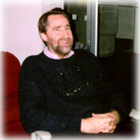

http://alindsay.www.media.mit.edu/~bv/
bv@media.mit.edu
Barry Vercoe is Professor of Music and Professor of Media Arts and Sciences at
MIT. He previously taught at Oberlin College Conservatory and Yale School of
Music. He holds a PhD in music composition, and was composer-in-residence for the
Seattle-Tacoma public school system when he wrote his first music involving
computer performance. He is author of several languages for digital audio
processing, and has hosted numerous workshops for composers and technology at
MIT.
Barry Vercoe
The Media Laboratory
Building E15
Massachusetts Institute of Technology
77 Massachusetts Avenue
Cambridge, MA 02139-4307